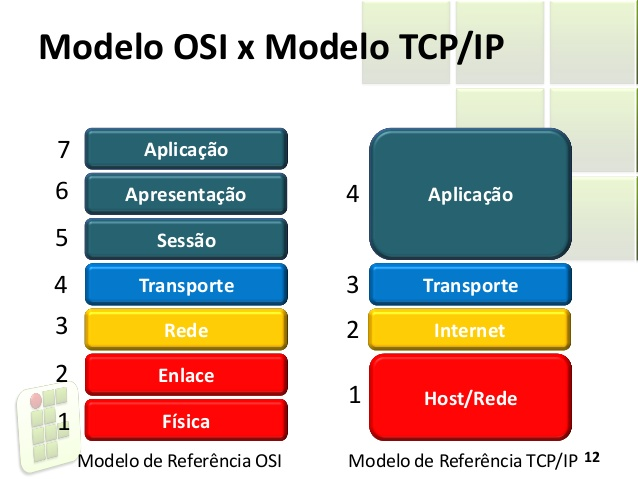
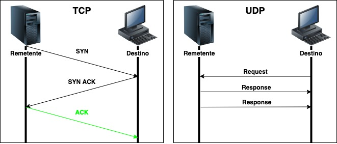
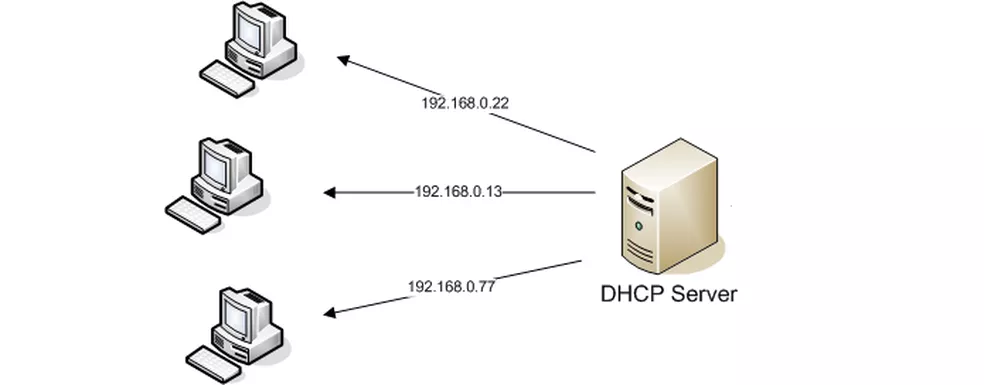

O OSI é o primeiro modelo padrão de comunicação entre sistemas de computadores e redes, ele faz uso de sete camadas para garantir essa conversa. A partir daí, a Organização Internacional de Normalização (ISO) o transformou na principal referência em 1984.
O modelo de arquitetura TCP/IP possui suas funções divididas em camada da mesma forma que o OSI. A diferença principal nestas estruturas é o número de camadas encontradas em cada modelo: no OSI encontramos 7 camadas, enquanto no TCP/IP somente 4: Aplicação, Transporte, Rede e Interface de rede.
A grande diferença do protocolo TCP para o UDP é a falta de confiabilidade. UDP não se preocupa se os pacotes de dados chegaram ou não ao outro lado, esse protocolo apenas irá mandar os pacotes de forma contínua. Apesar da falta de confiabilidade, essa forma de transmissão pode ser vantajosa para aplicativos que necessitam alta velocidade de transmissão, como vídeos, jogos online ou conversas online.
É o mais antigo protocolo de transferência de dados já inventado, tendo mais de 50 anos de existência.
O FTP usa um servidor como o computador responsável por hospedar os arquivos. O cliente é o usuário que fará o acesso. A conexão é sempre autenticada com nome de usuário e senha, enquanto o servidor é geralmente acessado por um endereço de IP.
O protocolo DHCP é um protocolo de cliente/servidor que fornece automaticamente um host IP (Protocolo de Internet) com seu endereço IP e outras informações de configuração relacionadas, como a máscara de sub-rede e o gateway padrão.
O Sistema de Nomes de Domínio (DNS) funciona quase como uma agenda de contatos no seu celular. Isso porque ele reduz a lacuna de comunicação entre computadores e humanos, ligando os nomes de domínio com os seus respectivos endereços de Protocolo de Internet (IP).
O que é e para que serve o HTTP? HTTP é um protocolo (protocol) que permite a obtenção de recursos, como documentos HTML. É a base de qualquer troca de dados na Web e um protocolo cliente-servidor, o que significa que as requisições são iniciadas pelo destinatário, geralmente um navegador da Web.
Um web server é um sistema computacional que hospeda e fornece acesso aos conteúdos e aplicações através da internet. Geralmente contratado como um serviço, esse servidor recebe e processa as solicitações feitas por navegadores através de protocolos de rede como o HTTP ou HTTPS.